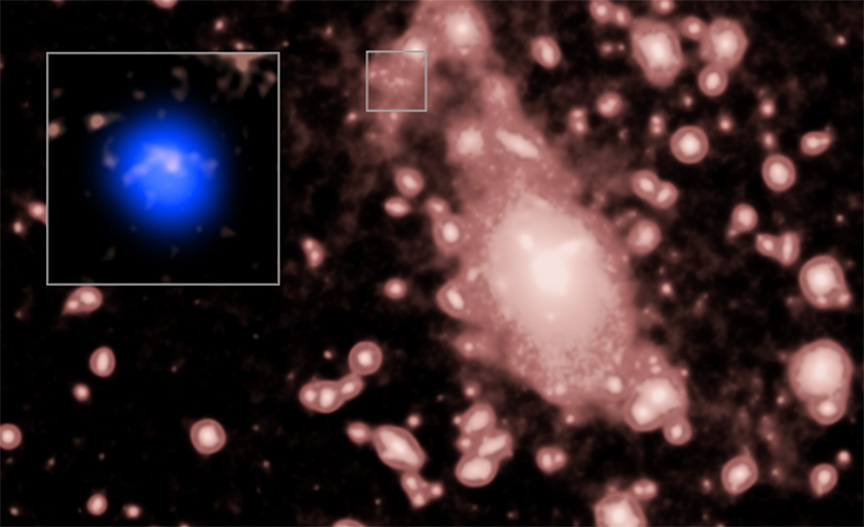
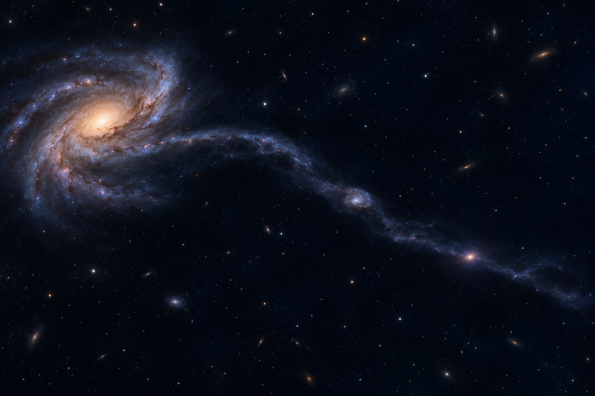
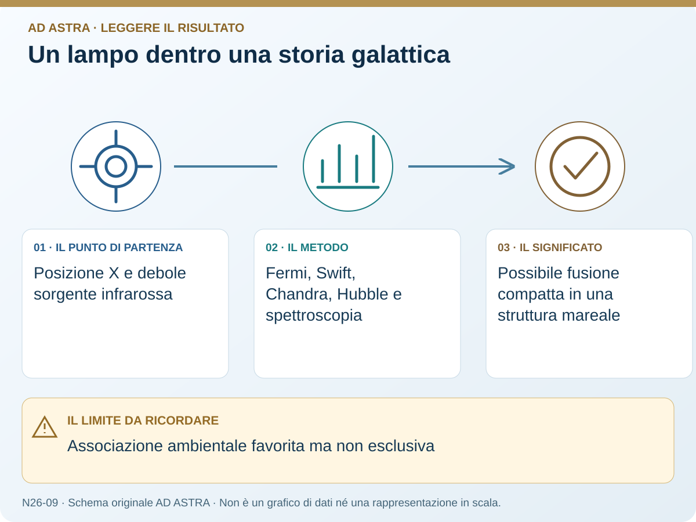

Astrofisica
Una probabile fusione di stelle di neutroni dentro i resti di un incontro galattico
Il luogo di GRB 230906A suggerisce una storia che unisce interazioni fra galassie, nascita stellare e produzione di elementi pesanti.
Il lampo è durato meno di un secondo, ma ricostruirne l’ambiente ha richiesto anni e più telescopi. GRB 230906A è stato osservato il 6 settembre 2023; la notizia del 10 marzo 2026 riguarda l’interpretazione del suo luogo d’origine. Secondo lo studio, una probabile fusione di stelle di neutroni sarebbe avvenuta in una galassia minuscola associata a una lunga struttura mareale, lasciata da precedenti interazioni fra galassie.
LA NOTIZIA IN BREVE
- L’evento gamma risale al 2023, lo studio è presentato nel marzo 2026.
- Chandra ha ristretto la posizione; Hubble ha rivelato una sorgente molto debole.
- L’associazione con una piccola galassia nella coda mareale resta un’interpretazione supportata, non unica.
La notizia in tre immagini



La posizione cambia la domanda
Un lampo gamma breve può essere associato alla fusione di oggetti compatti. La domanda non riguarda soltanto che cosa sia esploso, ma dove: l’ambiente conserva informazioni sulle stelle progenitrici e sulla storia che ha portato all’evento. Qui il quadro favorito collega la sorgente a materiale strappato durante un’interazione galattica, lontano da un grande centro luminoso.
Il lavoro distingue però ciò che si osserva dall’interpretazione della sequenza. Sono misurati il lampo, la posizione della controparte X e il chiarore di una possibile galassia ospite. La nascita di una coppia stellare e la successiva fusione non sono state filmate: vengono ricostruite confrontando i dati con scenari fisici.
Inseguire un lampo con strumenti differenti
Fermi ha rivelato il segnale gamma. Le osservazioni successive, comprese quelle di Swift e Chandra, hanno aiutato a localizzare la sorgente, fino a delimitare una zona abbastanza piccola da cercare una controparte debole nelle immagini di Hubble. Questo ordine conta: una fotografia profonda di un’area troppo vasta contiene molte possibili associazioni.
La spettroscopia del gruppo di galassie fornisce un altro pezzo del confronto. Serve a stabilire se le strutture osservate possano appartenere allo stesso ambiente, mentre la geometria della coda suggerisce un’origine mareale. Una coda mareale nasce perché la gravità differenziale ridistribuisce stelle e gas durante un incontro: non è un getto sparato dal buco nero centrale.
Per comprendere perché la localizzazione sia decisiva, immaginiamo più galassie dentro una zona d’incertezza. Anche una sorgente luminosa e vicina al centro potrebbe essere un’associazione casuale. Restringere quella zona diminuisce le alternative, ma la coincidenza sul cielo va ancora confrontata con distanze e probabilità di proiezione. La precisione astrometrica precede dunque la ricostruzione della storia stellare.
Gli elementi pesanti possono nascere anche in periferia
Quando due stelle di neutroni si fondono, parte della materia espulsa può attraversare una rapida cattura di neutroni. Questo processo contribuisce alla formazione di elementi più pesanti del ferro. Il materiale deve poi mescolarsi con il gas perché una generazione successiva di stelle ne conservi traccia: produrre un elemento e ritrovarlo in una stella sono passaggi diversi.
Un evento in un ambiente periferico aiuta quindi a esplorare come avvenga l’arricchimento lontano dalle regioni più luminose. Offre anche una possibile spiegazione per alcuni lampi apparentemente privi di galassia ospite: la galassia potrebbe essere semplicemente troppo debole per le osservazioni disponibili, anziché essere davvero assente. Questo caso non stabilisce che tutti i lampi senza ospite visibile abbiano tale origine.
Anche la durata del lampo aiuta la classificazione senza risolvere ogni ambiguità. Breve descrive una proprietà misurata del segnale; fusione descrive un processo fisico dedotto. Tenere separati i due livelli permette di discutere le eccezioni e di aggiornare l’interpretazione quando emergono nuove controparti o informazioni sull’ambiente.
Una galassia di sfondo resta un’alternativa
Gli autori considerano anche una possibilità diversa: la sorgente debole potrebbe essere una galassia molto più lontana, proiettata casualmente sul gruppo. L’allineamento risulta poco probabile, ma una probabilità bassa non equivale all’impossibilità. Distinguere una vicinanza apparente da un’associazione fisica è un problema ricorrente quando si studiano oggetti debolissimi.
Non è inoltre una rilevazione diretta di oro, platino o onde gravitazionali attribuiti a questo singolo evento. Il legame con la fusione di stelle di neutroni e con l’arricchimento chimico nasce dal confronto con la fisica e con altri eventi. La notizia è importante proprio se mantiene questa catena di inferenze leggibile, senza trasformarla in una cronaca osservata passo per passo.
PER CAPIRE MEGLIO
Le parole della notizia
Stella di neutroniApri la spiegazione
Resto stellare estremamente compatto nel quale una massa paragonabile a quella del Sole è concentrata in poche decine di chilometri.
Leggi la voce del GlossarioLampo gammaApri la spiegazione
Breve emissione molto energetica di raggi gamma, associata a differenti fenomeni catastrofici a seconda delle sue caratteristiche.
Leggi la voce del GlossarioRISALI ALL’ORIGINE
Fonti e approfondimenti
Il comunicato presenta il risultato al pubblico. Il lavoro scientifico e la sua cronologia sono indicati separatamente.
COMUNICATO UFFICIALENASA, comunicato del 10 marzoEvento del 6 settembre 2023; annuncio dello studio nel 2026.DOCUMENTO SCIENTIFICO E PROVENIENZADichiara et al., A merger within a mergerAbstract e cronologia consultati: prima versione 17 ottobre 2025, revisione 4 marzo 2026; accettato su ApJ Letters.DOCUMENTO SCIENTIFICO E PROVENIENZAChandra, scheda e dati dell’immagineScheda istituzionale consultata; distingue esplicitamente composito osservativo e due ricostruzioni artistiche.CONTINUA SU AD ASTRAApprofondisci nella Biblioteca FederataUna ricerca tematica fra i materiali disponibili.